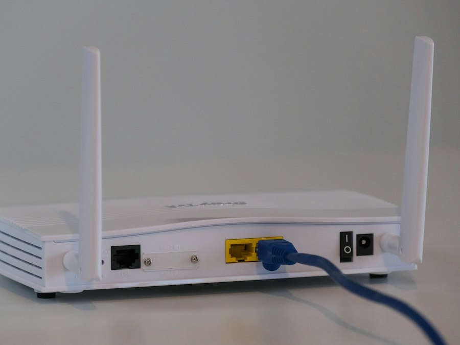

Biznesimga sayt yoki bot kerak
Buyurtma qabul qiladigan sayt yoki Telegram bot qilib beraman.
1 000 000 soʻmdan
Sayt va botlar
Men Sa'dulla Khaitov. Sayt va botlar qilaman, AI bilan ishlarni avtomatlashtiraman, internet va kompyuterlarni sozlayman, video montaj qilaman. Ishni boshidan oxirigacha oʻzim bajaraman.
15 daqiqada oʻzim javob beraman · Maslahat bepul
Muammongizni tanlang — qolganini oʻzim hal qilaman.
Buyurtma qabul qiladigan sayt yoki Telegram bot qilib beraman.
AI yordamchi mijozlarga oʻzi javob beradi, hisobotlar oʻzi tayyorlanadi.
Wi-Fi'ni butun uy yoki ofisga yetkazaman, router va kompyuterlarni sozlab beraman.
Reels, reklama va tadbir videolarini montaj qilaman, rangini toʻgʻrilayman.
Kerakli xizmatlarni tanlang — taxminiy narx shu zahoti hisoblanadi.
Qiladigan ishlarim turlari. Hozircha rasmlar namuna — haqiqiy ishlar rasmlari tez orada qoʻshiladi.

Namuna Orzu TechIT kompaniya
Orzu TechIT kompaniya Oʻzbekiston temir yoʻllariTransport
Oʻzbekiston temir yoʻllariTransport Osiyo xalqaro universitetiUniversitet
Osiyo xalqaro universitetiUniversitet Buxoro viloyati soliq boshqarmasiDavlat idorasi
Buxoro viloyati soliq boshqarmasiDavlat idorasi Asia Alliance BankBank
Asia Alliance BankBankKim bilan ishlashingizni bilib qoʻying.

Salom! Men Sa'dulla Khaitov, Buxorodanman. Saytlar va Telegram botlar yarataman, internet, Wi-Fi va kompyuterlarni sozlayman, video montaj qilaman va bizneslarga AI yordamchilarni ulab beraman. Har bir ishni oʻzim qilaman va oʻzim javob beraman: kim bilan gaplashsangiz, ishni ham oʻsha odam bajaradi.
Qisqa javoblar. Javob topmasangiz — yozing.
Koʻp uchraydigan sabablar: router uyning bir chetida turibdi, qalin devorlar, ulangan qurilmalar koʻp yoki router eskirgan. Koʻpincha routerni toʻgʻri joyga qoʻyish va qayta sozlashning oʻzi yordam beradi.
Kuchaytirgich (repiter) oʻrniga mesh tizim yoki kabel bilan ulangan qoʻshimcha nuqta (access point) qoʻyish yaxshiroq — xonadan xonaga oʻtganda internet uzilmaydi.
Bu professional router: ikki provayderni ulash, mehmonlar uchun alohida Wi-Fi, tezlikni cheklash, filiallar orasida VPN. Ofis, doʻkon va mehmonxonaga juda mos, oddiy uyga shart emas.
Landing (bir sahifali sayt) — 5–10 kun, bir necha boʻlimli korporativ sayt — 2–4 hafta. Muddat matn va rasmlar qanchalik tez berilishiga ham bogʻliq.
Buyurtma va arizalarni qabul qiladi, mahsulotlar katalogini koʻrsatadi, toʻlov qabul qiladi, mijozlarga xabar yuboradi va ularning roʻyxatini yuritadi — hammasi avtomatik.
Ha, domen (masalan, nomingiz.uz) va hosting yiliga bir marta alohida toʻlanadi. Ularni tanlash va ulashda yordam beraman.
Oddiy bot faqat tugmalar bilan ishlaydi. AI bot esa mijoz oʻz soʻzi bilan yozgan savolni tushunadi va sizning narx va xizmatlaringiz haqidagi maʼlumot asosida oʻzbek yoki rus tilida javob beradi.
Bot faqat siz bergan maʼlumotlar asosida javob beradigan qilib sozlanadi, bilmagan savolni esa xodimingizga oʻtkazadi. Ishga tushirishdan oldin birga sinab koʻramiz.
Ha, AI xizmatidan foydalanish uchun oylik kichik toʻlov boʻladi — u xabarlar soniga bogʻliq. Uni oldindan hisoblab aytaman.
Har kuni takrorlanadigan ishlarni: buyurtmalarni jadvalga yozish, hisobot tayyorlash, mijozlarga eslatma yuborish, saytdan kelgan soʻrovlarni Telegramga uzatish.
Reels yoki qisqa reklama — 1–2 kun, toʻy va tadbir videolari — 1–2 hafta. Shoshilinch ish ham boʻladi, oldindan kelishamiz.
Barcha xom videolar, logotip va musiqa (boʻlsa), va sizga yoqqan namuna video — shunda natija kutganingizdek chiqadi.
Bu videoning rangini professional tuzatish: kadrlar bir xil rangda, terining rangi tabiiy, umumiy kayfiyat chiroyli chiqadi. Oddiy telefonda olingan video ham ancha qimmat koʻrinadi.
Koʻrik va maslahat bepul.
Raqamingizni qoldiring — oʻzim qoʻngʻiroq qilaman.